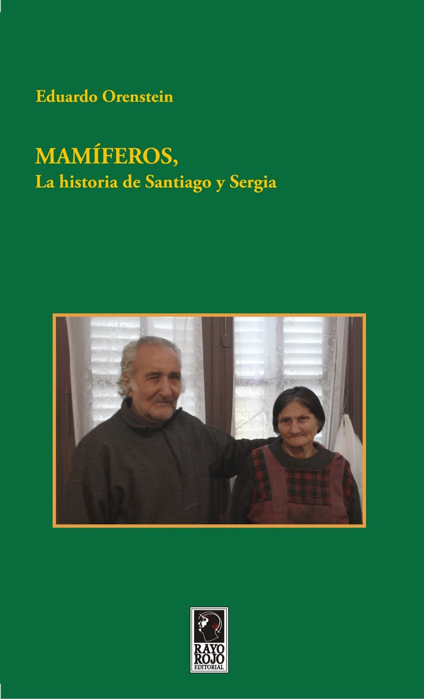
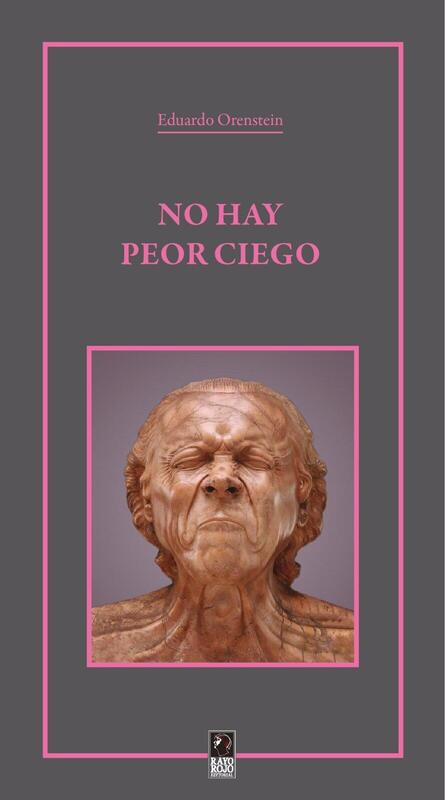

Otros

N.° 1
Mamíferos
"La adaptación de los mamíferos a un nuevo hábitat toma tiempo indefinido", esto sentenció un médico a cargo de Santiago y Sergia. Lo que no estimó el…

N.° 2
No Hay Peor Ciego
En el Infierno de Dante, los pecadores de envidia tienen los ojos cosidos con alambre. No es sensato ser envidioso, y mucho menos, como una premonición,…